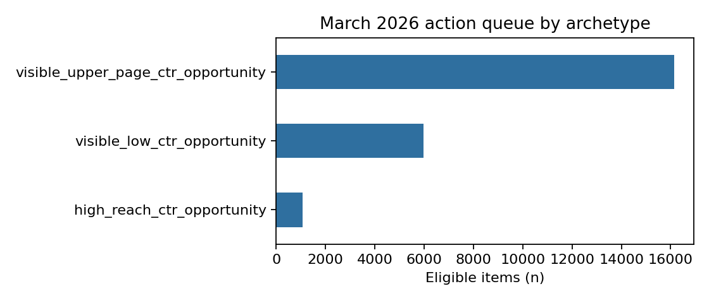

Abstract
This study asks whether decision-time search signals can help a content team rank pages for near-term review. I used the gated FlyRank warehouse's March 2026 daily performance partition, keeping client and content identifiers for grouping only and excluding future outcomes from the features. A Logistic Regression model used log impressions, log clicks, average position, and CTR, and was compared with the Week-4 transparent rule on the same client-held-out test rows. In the executed run, the model measured ROC-AUC 0.8458 and average precision 0.5224, while the rule's ROC-AUC was 0.5000 and average precision 0.1386; model precision@50 was 0.94. The output is decision support for human review, not proof that an edit causes more traffic or that a page definitely needs refreshing.
Read only the abstract, table, chart captions, and limitations to get the complete cautious story.
1. Introduction / problem statement
Content teams cannot review every page every day. The practical question is: which client-content items look worth reviewing first because they have meaningful search visibility but unusually weak click-through?
Unit of analysis
One daily row is one pseudonymized client-content item on one reporting date.
Human decision
A reviewer checks title, snippet, intent, brand context, SERP features, and recent changes before choosing an action.
The cost of a wrong call is wasted editorial time or an unnecessary change. A score is therefore useful only when its provenance and limits are visible.
2. Data and safety
The source is the FlyRank internship warehouse release, specifically fact_content_daily_performance. W03 verified the daily client-content grain, the March 1–31 span, and availability with gsc_data_available IS TRUE. The model uses March 1–20 because March 21 onward is needed to form the next-day outcome boundary in the executed frame.
What is included
- GSC impressions and clicks available at decision time.
- GSC average position, with source zero treated as missing rather than rank zero.
- CTR calculated from same-day clicks and impressions.
- The next observed day’s click indicator as a deliberately limited performance proxy.
What is excluded
- Client and content hashes as model inputs; they are grouping keys only.
- Next-day and future metrics, trend/label-derived fields, and product flags.
- GA4 fields in this first model because availability varies by client and date.
- The June final-month sample, which is sealed under the project rules.
No client names, URLs, private queries, or raw content are published.
3. Methodology
Baseline first
W04 created a human-readable rule: impressions ≥500, average position 4–20, and CTR <0.5%. It asks for pages that are visible enough to matter but receive few clicks. The score rewards reach and stronger visibility while prioritizing low CTR. It is a prioritization rule, not a causal claim.
Interpretable model
W05 fit standardized Logistic Regression with seed 202609. The four inputs are log_impressions, log_clicks, avg_position, and ctr. The label is next_day_has_click, constructed only from the following observed day.
Validation and leakage
The headline split groups by client: no client appears in both training and test. W06 also compared random rows with grouped clients and documented why grouped validation is the more honest test of transfer to unseen clients. A deliberate label-copy attack reached a perfect score, proving the audit harness detects leakage; that feature was removed.
4. Results
| Method | ROC-AUC | Average precision | Precision@50 |
|---|---|---|---|
| Week-4 rule | 0.5000 | 0.1386 | 0.08 |
| Logistic Regression | 0.8458 | 0.5224 | 0.94 |
The base rate was 0.1192, so precision@50 is read alongside the prevalence of positive next-day outcomes. On this held-out client split, the model measured stronger ranking skill than the rule. That is a result for this March slice, not a guarantee for another month.
What the model leaned on
Standardized coefficient magnitudes were largest for log_impressions (1.301), then avg_position (-0.630), log_clicks (0.401), and ctr (0.045). Recent visibility and position plausibly carry information about near-term search activity.
What errors looked like
The top-decile inspection found 21,031 false positives and 39,534 false negatives. Sparse impressions and volatile day-to-day behavior are candidate explanations to investigate. They are not proof that the model or an editor made a causal mistake.

5. Limitations & honest framing
Safe claim: the model ranks items using decision-time signals associated with the observed next-day click proxy and can support human prioritization.
- The target is a performance proxy, not a ground-truth “needs refresh” label.
- Observational data cannot establish that changing a title, snippet, or page causes more clicks.
- March is one development period; seasonality, SERP features, brand intent, and client mix may change results.
- Grouped validation tests unseen clients. A time-aware evaluation would be a stronger deployment check.
- GSC availability and uneven panel history define the evaluated population.
6. Ranked recommendations
The W07 playbook turns the score into a human queue. Each eligible row has a rank, score, reason code visible_low_ctr_position_opportunity, and action label review_title_snippet_and_intent.
- High-reach opportunities: review pages with the largest impressions first because reviewer time is limited.
- Upper-page CTR opportunities: inspect title/snippet alignment, query intent, and competing SERP features.
- Visible low-CTR opportunities: confirm that the signal is not branded, navigational, seasonal, or sparse before spending time.
- Record and monitor: document the human decision and observe the next period without claiming that the edit caused the result.
No-go automation list
Never automatically publish rewrites, change canonical or robots rules, create redirects, delete content, declare a page “bad,” or claim that an edit caused growth. These actions require qualified human review and, for causal conclusions, a stronger design.
7. Reproducibility
The full workflow is in the repository:
Use Python 3.11 with DuckDB, pandas, scikit-learn, matplotlib, nbformat, and nbclient. In Colab, store the Hugging Face READ token as HF_TOKEN; never paste credentials into a cell. Run from the repository root. W07 regenerates the queue CSV and the figure used here.
8. Acknowledgments & data credit
Built on the FlyRank ML Internship dataset. Thanks to the FlyRank team for providing a realistic warehouse release for public-safe learning and evaluation.